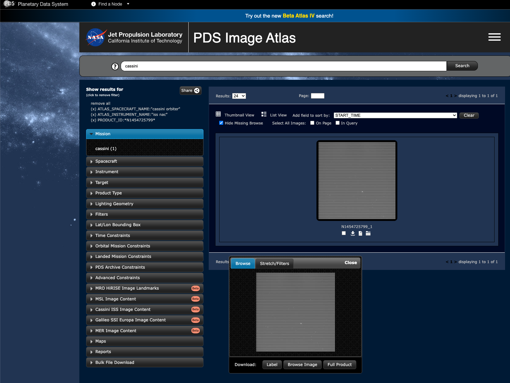

Is it easy enough to get to planetary data?
An imager (and user’s) perspective
2024-09-16
Who am I?
- Coding-inclined planetary scientist
- Worked on: Dawn, Cassini, BepiColombo, LRO, MRO, MEX
- Worked as/on:Ground ops, Onboard software, Project Manager, Calibration, Data analyst
- Fighter for open-source, open-data, open-science
- If I can’t reproduce with public data and public code:
- Worked at: MPS, UBe, UCLA(JPL/NASA), LASP(CU), Freie Uni Berlin.
Disclaimer
- I understand: an archiving budget and a “make things easy for the user”-budget aren’t the same numbers, propably not even close.
- And I appreciate that most stakeholders are formally paid only for archiving.
- Also, sometimes things are not working because an instrument team isn’t delivering what is needed.
What are the most prevalent types of data searches?
This is really a question I have, do we have data on this?
Candidates, IMHO:
- by product / observation ID
- by coordinates (space or time)
- by observation geometry / illumination conditions
- browsing (I’m really wondering how much this is done with an archive interface)
One of my perfect use cases
Testing for a set of data search types
- By product / observation ID (Is there a difference sometimes?)
- HRSC PID h6980_0000 (taken from a paper)
- Cassini ISS N1454725799
- By coordinates (space or time)
- Browsing
PSA continued
- googled “ESA PSA”
- googling “PSA HRSC” not working, “PSA HRSC data” better, but not direct
- very quick to filter for one instrument or mission (1 entry/click)
- product ID filter is not shown immediately, distinction “Basic/Advanced” a bit small.
- tried to use “Observation ID” to find “h6980_0000” using
- h6980_0000
- h6980_0000*
- “h6980_0000”
- nothing worked.
- chose random other product for D/L testing, worked very smoothly. (zip)
ODE continued
- picking “Mars Orbital Data Explorer”
- because i heard about, otherwise very tough
- data product search
- Esa’s Mars Express
- HRSC
- calibrated data (simply choosing HRSC not possible?)
- filter by product ID
- “h6980_0000*” gives 9 results
- View results in table
Rings Node continued (results page)
- clicked on 1 results
- preview shown
- pressing spacebar to enter it to shopping cart got spinning wheel
- go to cart
- choose from download options
Atmosphere cont.
- Cassini Archive
- ISS
- Find info on PDS Image Atlas (the search engine)
- pick mission
- pick insterument
- find/enter PDS Archive Constraints (again, weirdly named?)
- one result shown
- clicking gives promising buttons
- choosing “Full Product” starts to stream binary code into the browser, WTH??
- even worse, right-click -> save as does not work with the button.
Atlas download options

ODE (HRSC)
Lat -85, -80,
Lon 10, 20
gives 509 results and no issues.
PSA (HRSC)
Same coordinates as ODE.
Gives error message:
- please select a target with an available map
Results
| PSA (HRSC) |
1 |
💔 |
💔 |
|
💚 |
| ODE (HRSC) |
2 |
💚 |
💚 |
|
|
| Rings |
2 |
💚 |
😐 |
|
💚 |
| Atmo |
1 / 9 (Know Atlas or not) |
💚 |
😐 |
|
|
Upcoming
- Want to try to add VESPA / EPN-TAP to the table
- Add it to planetarypy